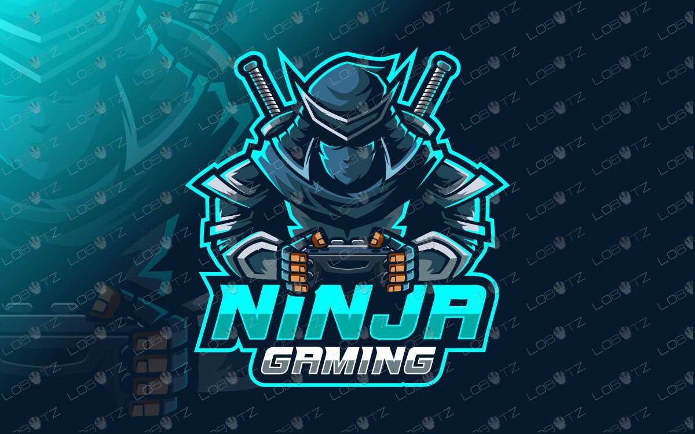

Riccardo Gaming
Web Developer
Dopo aver completato con successo il corso Boolean careers ho cominciato a lavorare per una grande azienda
Dopo aver completato con successo il corso Boolean careers ho cominciato a lavorare per una grande azienda


Nuovi personaggi, come l'Inkling di Splatoon e Ridley di Metroid fanno il loro debutto nella serie, insieme a tutti i lottatori dei capitoli precedenti! Anche un leggendario cacciatore di vampiri e un cattivo tra i più amati si aggiungono alla numerosa schiera di lottatori di Super Smash Bros
Nuovi personaggi, come l'Inkling di Splatoon e Ridley di Metroid fanno il loro debutto nella serie, insieme a tutti i lottatori dei capitoli precedenti! Anche un leggendario cacciatore di vampiri e un cattivo tra i più amati si aggiungono alla numerosa schiera di lottatori di Super Smash Bros
Nuovi personaggi, come l'Inkling di Splatoon e Ridley di Metroid fanno il loro debutto nella serie, insieme a tutti i lottatori dei capitoli precedenti! Anche un leggendario cacciatore di vampiri e un cattivo tra i più amati si aggiungono alla numerosa schiera di lottatori di Super Smash Bros